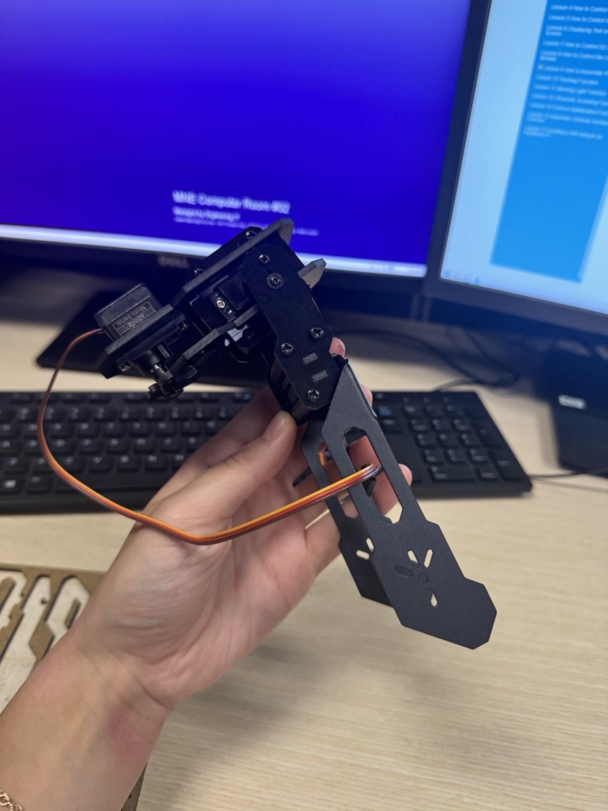
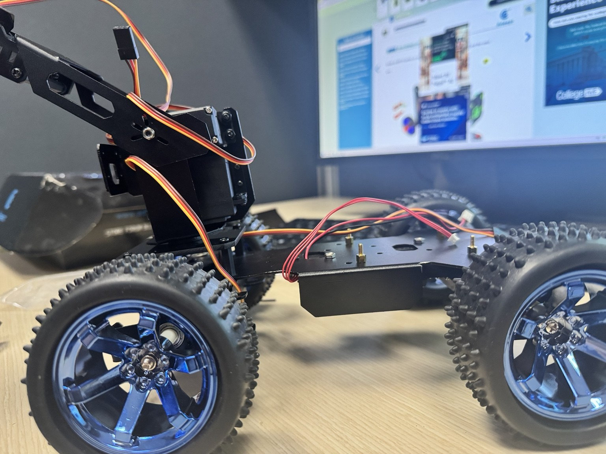
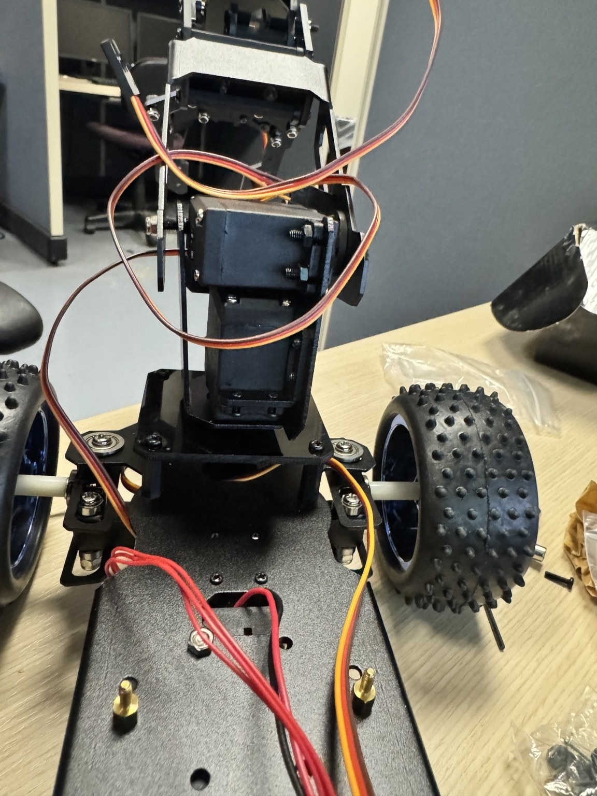

What I’m trying to do
The stock Pi Car Pro already has a small robotic arm and gripper. I’m using it as a starting point rather than treating the included mechanism as the final design. The goal is to develop a more capable four-finger gripper and articulated arm while keeping the system small enough to manufacture, assemble, and integrate with the car.
Project approach
I’m working through the project in stages: understand the stock hardware, measure its capabilities, define concrete improvements, develop concepts, model the mechanism, calculate joint requirements, determine the mounting interface, and then work through actuation and electronics.



Project Log
Starting with the stock mechanism
I started by brainstorming how I could improve the stock arm and potentially add two more fingers. Before buying additional hardware, I wanted to understand what the kit already provided and what I could design independently. I also made a priority list covering CAD, joint torque calculations, the mounting interface, electrical architecture, actuation, controls, simulation, and documentation.
Assembling before designing
I assembled the bot and arm without the electronics so I could understand how everything physically fits together. This gave me a better reference for mounting locations, dimensions, and range of motion before starting the custom CAD.
Finding the first mechanical issues
During a loose assembly, I found that the shoulder servo mount needs attention because a screw head interferes with the servo. I also noticed that the bracket could likely be narrower. The stock mechanism gave me useful baseline information about its motion and integration, which will guide the next revision.